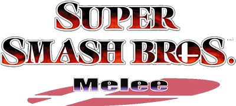
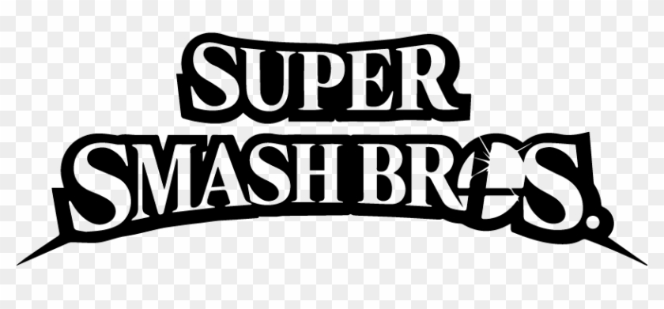
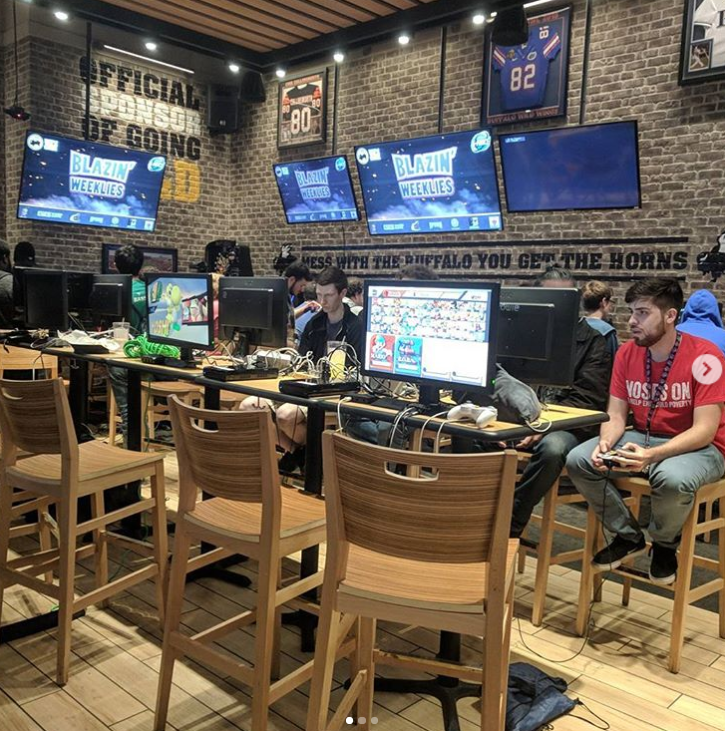
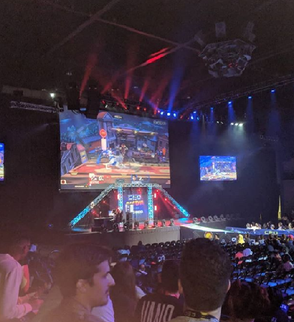
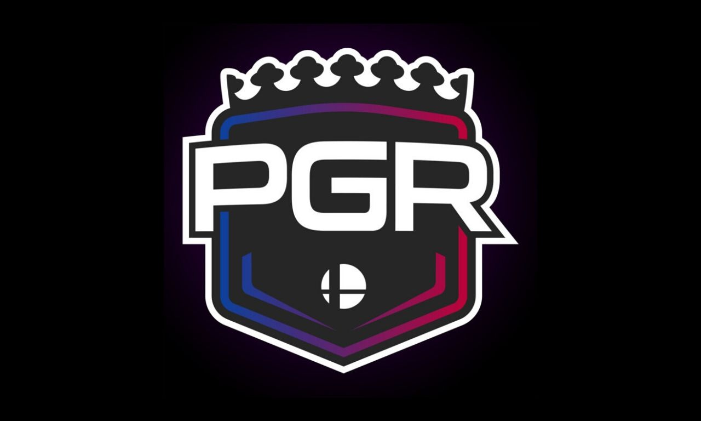
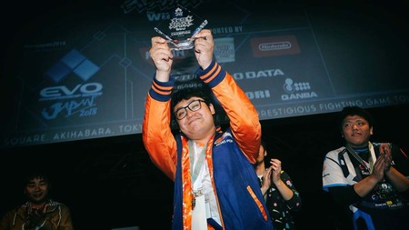
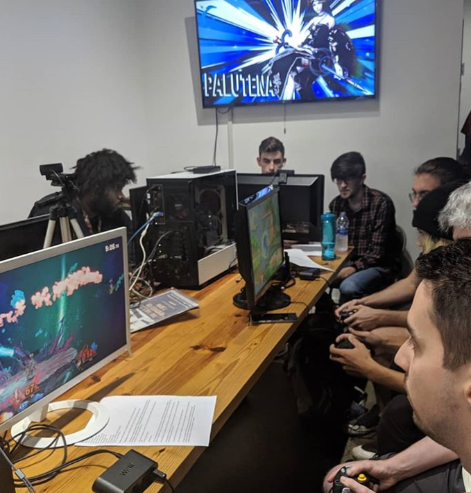

Super Smash Bros®, with the release of Smash bros 64 back in 1999 it had great reception from the very beginning but it wasnt until
the release of Super Smash Bros Melee for the Nintendo® Gamecube that the community started hosting their own grassroots tournaments
with hopes to see their beloved game grow as a competitive gaming scene, before the term "esports" was a thing.
Melee still has a strong and growing competitive scene to this day, players have accomplished great feats and the game competitive level
has grown up exponentially since then.

The newest release in the series is Super Smash Bros series is Super Smash Bros Ultimate, for the Nintendo Switch. Has a massive following, along the
lines of Super Smash Bros Melee. It was released in 2018, it boasts a massive character roster, most of the stages that have been in past titles and
new ones.

Smash Bros Competitive events come in all kind of sizes and scope. Locals, which are the usual weekly/biweekly event that most regions/areas in the World
have, like a tournament in a local venue, which is where most tournaments happen. These usually have participants from the area, Tampa local events usually
have people from Tampa, St Petersburg, Lakeland, Springhill and other close areas, for example.
Regional events: These events are on a bigger scale than locals, these events are for example a state based tournament, that might not have people travelling
from outside the state but it has a big group of statewide players, an example of Regional event, was Tampa Never Sleeps 8 which held a great number
of Florida based talent and some talent based on states close to Florida, like Georgia.

National level events: These events are usually where most of the Top level competitors gather, from different countries, states and different areas of the World.
These events usually have a big number of entrants. A clarification must be made that all these events unless is some kind of special event, all events are
Open for anyone to enter. It doesnt matter your skill level, region, country, etc. As long as you want to compete a pay a tournament fee that everyone has to pay,
you are in. These tournaments define how and who are the better players in the planet. With varied international competition, the competition gets strong
and the states are higher. These events usually last 2 or more days.
Rankings

There's a ranking system named Panda Global Rankings, usually referred as "PGR". The PGR consists of a ranking that decides who are the top 50/top 100 of the world
in their respective game. It uses a metric that takes the number of entrants and number of currently ranked players that participated in the event, to grant a tier
level to the events. National level events usually end up in A or S tier, which are the higher ranked tournaments that grant the most amount of points to top placers
of the event. Locals don't count for the PGR system since Locals usually have the usual competitors playing against each other playing more than once a week in
a tournament setting, which could skew results at the end.
MKLeo

The current number 1 in the World in Smash Bros Ultimate is "MkLeo", which is is gamertag/handle he uses for the tournament setting. The Mexican based player
took the competitive scene by storm. Has been winning or getting close to win events since he was a 14 years old, now being an adult, his reign of victory in
all levels of play and his dominance over the competitive scene, has his ranked as the number 1. He is known for his precise control of the game and his composure in
high pressure situations, which help him keep his cool where other players would get nervous.
Community

The smashbros community is an ever growing friendly community in general. In these events is not only composed of people who are only competitors,
spectators, tournament organizers, bracket runners, artists, commentators, coaches and more are considered part of the community. For a lot of people,
these events are a great way to meet people who share the same hobby as them. Most people who attend events regularly, end up being friends with each other.